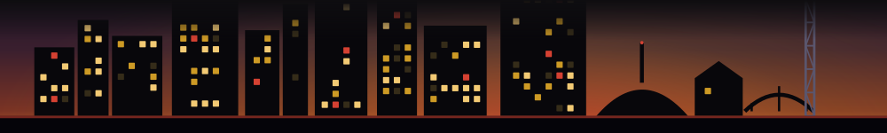

Campin' in the Park
, Spring Hill
Spring Hill's family camp-out in the park is happening today - last-minute and worth it if you're in the area.

The scene here runs on a clock. This is the morning read: the time-limited food, drink and one-night things that are open right now, the ones closing inside 72 hours, and the ones that just slipped away. Pulled straight from what the machine tracks. Bookmark it and check it like a local checks the weather.
Doors shut inside the next 72 hours. Move on these.
Spring Hill's family camp-out in the park is happening today - last-minute and worth it if you're in the area.
One-night pop-up at the hat bar tonight - women's sports-adjacent retail activation with a built-in social hour vibe.
Dolly + the Nashville Symphony with video, guest vocalists, and multimedia - closes tonight, last chance.
Two-day-only symphony celebration of Dolly's catalog - the kind of thing that sells out and then people are sad about it.
Tonight-only mashup of competitive energy and Y2K dance party - the kind of weird one-off Cannery Hall does well.
One-night HSM-flavored nostalgia night at Brooklyn Bowl - we're all in this together, apparently.
TRAIN plays Ascend tonight - if you don't have tickets yet, now's the moment.
One of only four dates in this outdoor series - tonight's your penultimate chance before the August finale.
The Buck Moon hike at Owl's Hill is tonight - one of only four full-moon walks on the 2026 calendar.
Last weekend to catch the summer farmers market trail before it wraps for the season.
A one-day Korean food showcase at Plaza Mariachi - free entry, worth the detour.
Last chance Saturday to catch the Frist's exhibit on its own building's transformation from federal post office to art museum - a genuinely good one-time show about the space you're standing in.
Windows you can still catch, soonest deadline first.
Three Canadian indie pillars on one Ryman bill - a one-night package that would have sold out a festival tent in 2007 and still will now.
The Police's drummer in the intimate City Winery room - this is a rare sit-down show from someone who belongs in arenas.
Wednesday wine dinner at The Mockingbird - a single-night seated format that fills fast and doesn't repeat on a schedule.
Free ICEEs outside Bridgestone on Wednesday for National ICEE Day - low stakes, high hydration, genuinely free.
Two-night Tame Impala stand at Bridgestone - one of the rare arena acts that actually sounds better live than on record.
Keanu Reeves' actual band at the Ryman - the novelty is real but so is the 90s alt-rock, and the room will be electric for exactly this reason.
NSC hosting Mexican Liga MX side Club Len - a one-night international friendly that upgrades the usual MLS midweek.
Speed-mingle format at Mere Bulles - champagne, new faces, and a built-in exit strategy if the conversation dies.
Annual BBQ and music event at Rocketown - one day only, and it draws a real crowd.
The Black Keys bring the Peaches 'n Kream tour to The Pinnacle Thursday - one night, no residency, don't sleep on it.
After-hours social event at the Tennessee State Museum on Thursday - the museum crowd is reliably good and this format keeps it loose.
One-night fitness-meets-party at Virgin Hotels - drag queens, weights, and whatever comes after at one of Nashville's slickest properties.
Gone in the last few days. The ache. This is what a day too late looks like.
Nothing has closed in the last few days. Rare. Enjoy it while it lasts.
This board does not ping you. It is a pull surface on purpose -- no alerts, no notifications, nothing in your pocket buzzing. The way to never find out a day too late is the Thursday list: the week's here-then-gone Nashville windows, in your inbox before they close.
Get the Thursday list, free →Planner? Put this week's deadlines on your calendar -- a quiet marker on the day each window closes. Same deal as this board: it sits there, it does not notify you.
Every window here is real and every date is its own stated close date, read from the Fleeting. discovery feed. Windows without a firm date are held back rather than guessed. Want the full closed list or a map? See the archive and the insider map.